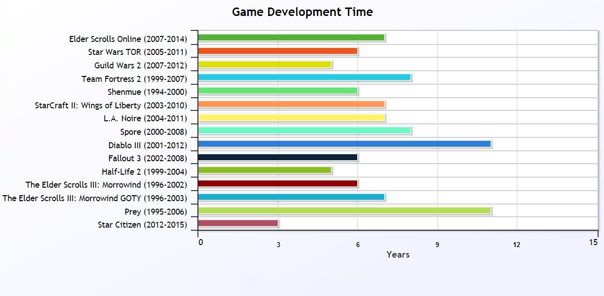

It has been shown over time that a casual game takes around 2 - 6 months to make, while typical AAA games average 18 - 36 months to make. Some of the bigger titles have taken up to 5 years long to make. 
However, a lot of unexperienced people seem to think otherwise of this fact.
They think that making a game is an easy process that takes, at the most, a month.
Even the casual games that do not make it very big in the industry take at the least 2 months of dedication towards, which entails working basically every day of the week, so it is clear that games are by far really difficult to make, produce, and market at the same time – despite the fact that large projects have thousands of people working on it.